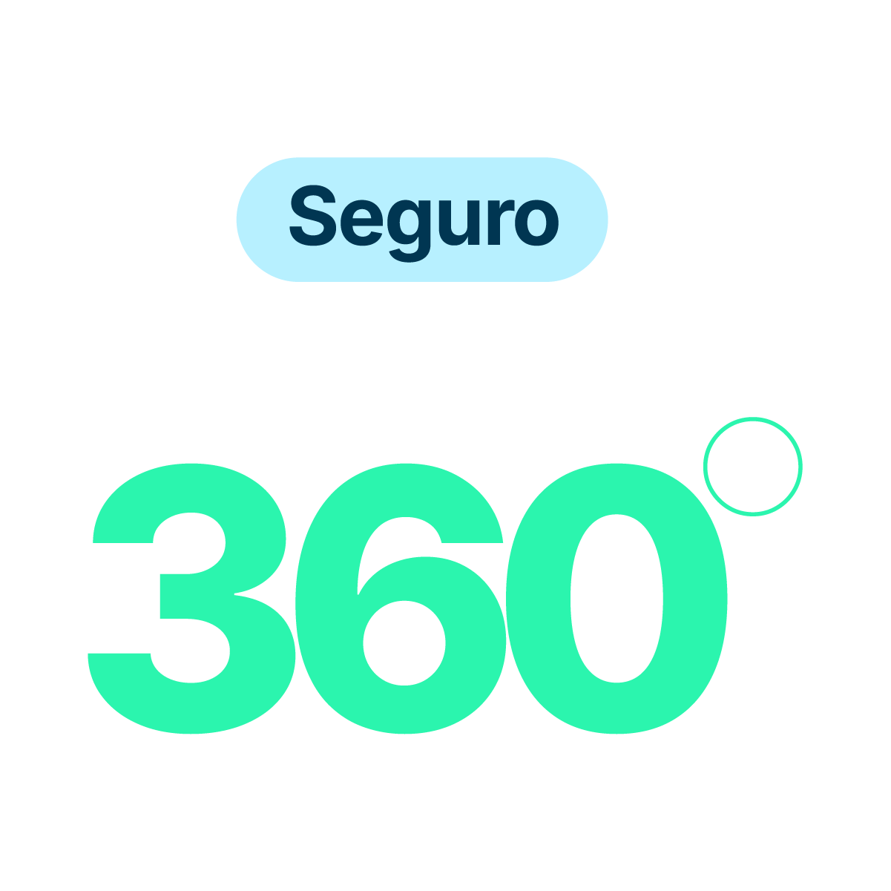

#2BF5AE#B7F0FF#012639--green-300[data-product="cancer360"]. Las fichas de clínica no llevan data-product: su paleta es la de tokens/colors.css y es el look aprobado por el cliente. Si una ficha de clínica necesita un color que no está en esos tokens, es un error — no un caso nuevo. El verde del KV (#8FF5B1) ya era --green-300 y el azul del logo ya era --blue-950: el KV de Cáncer360 es compatible con el sistema, no una identidad paralela.assets/logo-metlife-orienta.png) puede aparecer en cualquier ficha que incluya el servicio, sin arrastrar acentos.